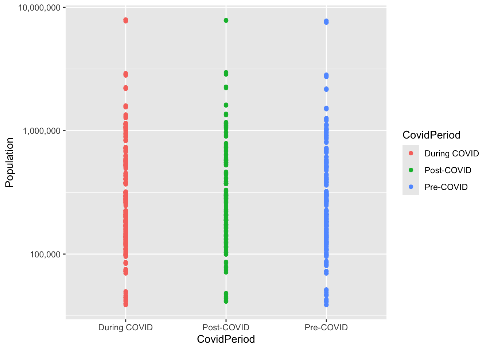

# A tibble: 6 × 4
City Gender Year Population
<chr> <chr> <dbl> <dbl>
1 Adana Erkek 2024 1140836
2 Adana Kadın 2024 1139648
3 Adıyaman Erkek 2024 309540
4 Adıyaman Kadın 2024 301497
5 Afyonkarahisar Erkek 2024 375263
6 Afyonkarahisar Kadın 2024 374930The Impact of Covid-19 on Türkiye
1. Project Overview and Scope
The Pandemic has had profound effects on the society and economy worldwide. It can be said that with the pandemic our lives had changed significantly and maybe some can not even remember what the life was like before pandemic. This had positive and negative impacts on the countries. This project investigates such impacts with the scope of Türkiye. The Turkish Statistical Institute (TUIK) databases will be used during this analysis of the Türkiye’s situation regarding to the impact of Covid-19 on Türkiye. The main objective is to understand the reasons and structural changes that might have happens after the Covid-19 by comparing the pre and post pandemic periods.
This project will mainly focuses on the population growth, birth and death rates, martial behaviors employment situations, trading activities. The focus will be on 3 periods 2018-2019 the pre-pandemic period, 2020 - 2022 pandemic period and lastly 2023-2024 post-pandemic period. Even though there is multiple years data on the TUIK’s database i narrowed the years to these fundamental 7 years to avoid any seasonality of the previous years recession.
2. Data
The data sets that are used are taken from the TUIK. The below is the details of the such structure of these data sets.
1- Population Data
The population data will be used to identify the population trends, detect if there is a slowdown of population growths during or after the Covid-19.
2- Death Statistics
The death is an important factor to understand the affects of the Covid-19 to understand if the rates have been increased or not during or after the pandemic compared to the pre-pandemic era. With this information we can understand our immune system as a population and understand is there is any incline of certain causes of death or are we back to pre-pandemic period.
# A tibble: 6 × 5
`Death Reason Code` `Death Reason` Gender Year `Amount of Deaths`
<chr> <chr> <chr> <dbl> <chr>
1 A00-B99 Enfeksiyon ve parazit has… Erkek 2018 5438
2 C00-D48 İyi huylu ve kötü huylu t… Erkek 2018 52933
3 D50-D89 Kan ve kan yapıcı organla… Erkek 2018 515
4 E00-E90 İç salgı bezi (endokrin),… Erkek 2018 8454
5 F00-F99 Zihinsel (mental) ve davr… Erkek 2018 243
6 G00-H95 Sinir sistemi ve duyu org… Erkek 2018 9019 3- Marriage Statistics
The Marriage usually used as a symbol of happiness and hope. The increase of marriages usually means that there is a general happy period of a countries. With the trend of the marriages we can understand the welfare of the country, the unemployment rate of the youth and the populations age dsitribution.If the marriages are in a increase trend we can say that the economic conditions of the country is getting better. That’s what we will be investşigating with this data set.
# A tibble: 6 × 3
City Year Marriages
<chr> <dbl> <dbl>
1 Adana 2024 15076
2 Adıyaman 2024 4720
3 Afyonkarahisar 2024 4811
4 Ağrı 2024 3132
5 Amasya 2024 2134
6 Ankara 2024 371994- Average Age of Marriage
The average of the marriage along with the total amount of marriages in a country can show us the indebth details of the countries economic conditions. If the average age of marriage is decreasing we might say that the age distribution of the population is moving towards the youths.
# A tibble: 6 × 4
City Year Gender `Average Marriage Age`
<chr> <dbl> <chr> <dbl>
1 Türkiye 2001 "Erkek\r\n" 27.6
2 Adana 2001 "Erkek\r\n" 28.7
3 Adıyaman 2001 "Erkek\r\n" 28.0
4 Afyonkarahisar 2001 "Erkek\r\n" 25.3
5 Ağrı 2001 "Erkek\r\n" 29.2
6 Amasya 2001 "Erkek\r\n" 26.55- Import Data
The importing goods and services can mean that the country is not sufficiently producing the goods that is imported. This can be a good sign of diplomacy meanwhile if a country is importing all of its good we can say that this country is economically dependent. With the trend of the imports we can see if Türkiye is getting more depended with its economy.
# A tibble: 6 × 3
City Year `Import ($)`
<chr> <chr> <chr>
1 Adana 2024 3486030.9520000005
2 Adıyaman 2024 35522.072
3 Afyonkarahisar 2024 171471.2
4 Ağrı 2024 155005.041
5 Amasya 2024 50566.66
6 Ankara 2024 17222315.8900000016- Export Data
The exporting of goods and services has a similar indentations of the import. Here the increase in exports means that the country is well off şn the domestic side has sufficient diplomatic communicatin to be able to export its surplus. The trend of the exports also will give us the economical back ground of the Türkiye for the time period.
# A tibble: 6 × 3
City Year `Import ($)`
<chr> <dbl> <dbl>
1 Adana 2024 3111751.
2 Adıyaman 2024 55579.
3 Afyonkarahisar 2024 345845.
4 Ağrı 2024 51565.
5 Amasya 2024 165115.
6 Ankara 2024 14975519.7- Birth Statistics
The birth statistics are important for a country since increasing the youth of a country can push its growth further. The trends of the birth can means that the country will be increasing the youth population.
# A tibble: 6 × 4
City `Gender of the Baby` Year `Doğum Miktarı`
<chr> <chr> <dbl> <dbl>
1 Adana Erkek-Boy 2018 18035
2 Adana Kız-Girl 2018 17352
3 Adıyaman Erkek-Boy 2018 6472
4 Adıyaman Kız-Girl 2018 6094
5 Afyonkarahisar Erkek-Boy 2018 5192
6 Afyonkarahisar Kız-Girl 2018 48838- Fertility Rate
This with the birth statics we can understand the distribution fo the population much better.
# A tibble: 6 × 3
Year Category `Fertility Details`
<dbl> <chr> <dbl>
1 2001 Doğum sayısı 1323341
2 2002 Doğum sayısı 1229555
3 2003 Doğum sayısı 1198927
4 2004 Doğum sayısı 1222484
5 2005 Doğum sayısı 1244041
6 2006 Doğum sayısı 12554329- Employment Data
This is also one of the important aspect of a countries economical indicators. The higher the employment rate the country’s internal investment are distributed. Ideally a country wants to be %100 employed. This data will be used to analyze this situation.
New names:
• `` -> `...5`
• `` -> `...6`
• `` -> `...7`
• `` -> `...8`
• `` -> `...9`
• `` -> `...10`
• `` -> `...11`
• `` -> `...12`
• `` -> `...13`
• `` -> `...14`
• `` -> `...15`
• `` -> `...16`# A tibble: 6 × 16
Year Gender `Martial Status` `Employment Rate` ...5 ...6 ...7 ...8 ...9
<dbl> <chr> <chr> <dbl> <lgl> <lgl> <lgl> <lgl> <lgl>
1 2014 "Erkek… Boşandı 63.2 NA NA NA NA NA
2 2014 "Kadın" Boşandı 39.7 NA NA NA NA NA
3 2015 "Erkek… Boşandı 63.2 NA NA NA NA NA
4 2015 "Kadın" Boşandı 39.5 NA NA NA NA NA
5 2016 "Erkek… Boşandı 63.6 NA NA NA NA NA
6 2016 "Kadın" Boşandı 41.7 NA NA NA NA NA
# ℹ 7 more variables: ...10 <lgl>, ...11 <lgl>, ...12 <lgl>, ...13 <lgl>,
# ...14 <lgl>, ...15 <lgl>, ...16 <dbl>10- Education Level
Education level is related with the technological advancements of a country to analyze the root of its economy. Some countries can be tech driven while others are related with the service industries. Checking the trends of the educational level of the country can give us some idea of its economical drivers. Checking the periods education level will also give us clues on the changes in the Türkiye.
# A tibble: 6 × 5
City Gender Year `Education Level` Person
<chr> <chr> <dbl> <chr> <dbl>
1 Adana Erkek 2015 Toplam 970600
2 Adıyaman Erkek 2015 Toplam 265011
3 Afyonkarahisar Erkek 2015 Toplam 317089
4 Ağrı Erkek 2015 Toplam 239823
5 Amasya Erkek 2015 Toplam 146232
6 Ankara Erkek 2015 Toplam 23659472.1 Preprocessing
For the preprocessing of the data I used basic excel skills since i create the structure of data i want to analyze. Also the data sets weer small in comparison to other topic i could have analyzed. What i did basically is tidying data via the tidy methodologies of the Hadley Wickham (1). I formatted my data into his ideology of data shaping this way it was much easier to use the data sets i obtained from TUIK.
3. Analysis
Once we go through the data and the explanation of the data sets i will use. We can move on with the analysis. The analysis will mainly take 7 sections. These section will seperately analyzed then a conclusion will be made for each section.
3.1 Population
The first step of every analysis is to see the general view of the trend. Here we can see the increase of the population over time. With this view we can observe;
The overall population is increasing over the time period.
The increase of the pre-pandemic and during pandemic periods seems to be similar.
There is a drop of the incline of the population growth during the post-pandemic period.
population_summary <- population_data %>%
group_by(Year) %>%
summarise(TotalPopulation = sum(Population))
ggplot(population_summary, aes(x = Year, y = TotalPopulation)) +
geom_line(color = "red",linewidth = 1.5) +
scale_x_continuous(breaks = unique(population_summary$Year)) +
scale_y_continuous(labels = scales::comma) +
labs(title = "Total Population Over Years", y = "Population", x = "Year")
We need to dive in more with the population data. Lets see the
gender_summary <- population_data %>% group_by(Year, Gender) %>% summarise(Population = sum(Population))
ggplot(gender_summary, aes(x = Year, y = Population, color = Gender)) + geom_line(size = 1.2) + scale_y_continuous(labels = scales::comma) + labs(title = “Population Trend by Gender”)
3.2 Education
xxxxxx
3.3 Marriage
xxxxxx
3.4 Birth and Fertility
3.5 Death
3.6 Employment
3.7 Export and Import
xxxxxx
4. Results and Key Takeaways
xxxxxx